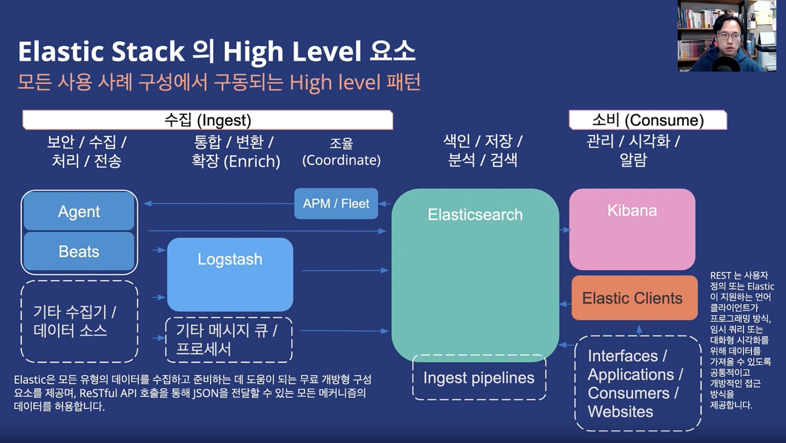
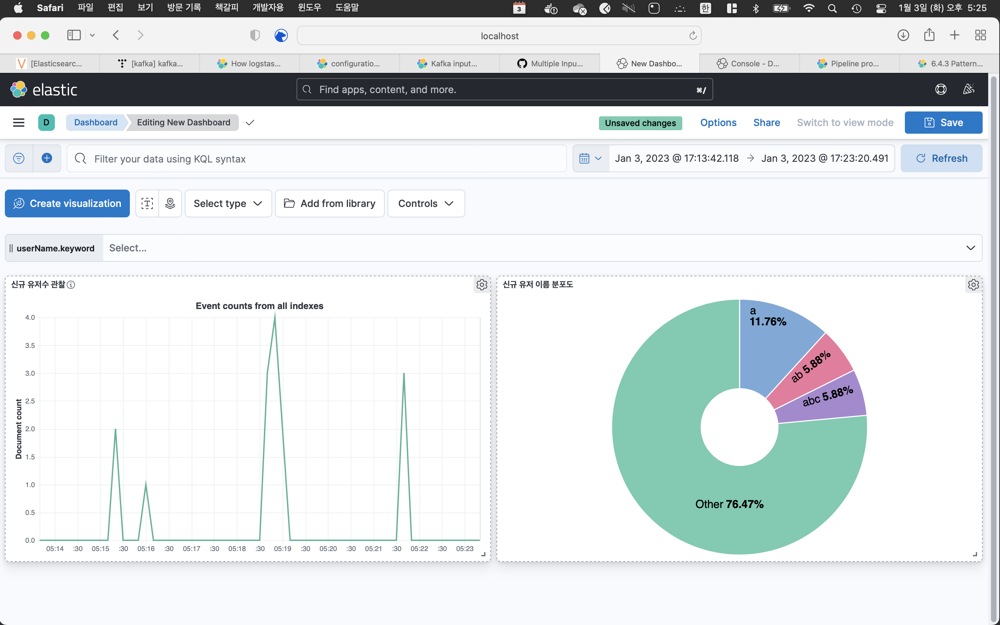

ELK stack
ELK 스택은 Elastic Search + Logstash + Kibana를 지칭하는 단어다. ES만 사용하는것이 아닌, Logstash(or Beats/Agent)로 원하는 데이터를 정제하여 ES에 삽입하고, Kibana를 통해 시각화시켜주는 통합기술스택이라고 보면 되겠다.
아래는 김종민 님의 ES Webinar 중 하나에서 발췌한 그림이다.  reference https://www.elastic.co/kr/virtual-events/optimizing-the-ingest-pipeline-for-elasticsearch
그림을 보면 크게 1. 데이터를 수집/정제하는 Ingest Pipeline, 2. 데이터가 저장되는 ElasticSearch, 3. 데이터를 시각화하는 Kibana 로 나뉜다. 이제부터 각각 어떤식으로 사용할 수 있는지 확인해보자.
1. Ingest Pipeline
Ingest pipeline은 Beats나 Agent, Logstash를 통해 구축할 수 있으며 별개로 따로 추가해줄 수도 있다. 주로 Beats와 Agent는 가벼운 필터링을 위해 사용되며 Logstash는 더욱 다양한 정제를 위해 사용된다.
아래는 직접 Ingest api를 통해 pipeline을 추가한 예시이다.
1-1. Injest API를 통한 pipeline 구축
1
2
3
4
5
6
7
8
9
10
11
12
13
14
15
16
17
18
19
20
21
22
23
24
25
26
27
28
29
30
PUT _ingest/pipeline/my-pipeline
{
"description": "My optional pipeline description",
# 여러가지 데이터 정제를 위한 선언
"processors": [
{
# 데이터가 들어오면 my-long-field 필드에 10을 넣어 정제
"set": {
"description": "My optional processor description",
"field": "my-long-field",
"value": 10
}
},
{
# 데이터가 들어오면 my-boolean-field 필드를 true로 변환
"set": {
"description": "Set 'my-boolean-field' to true",
"field": "my-boolean-field",
"value": true
}
},
{
# my-keyword-field 필드의 값을 소문자로 변환시킨다
"lowercase": {
"field": "my-keyword-field"
}
}
]
}
만약 파이프라인을 엮어서 추가하고 싶을 때, 아래와같이 추가한 뒤 kibana에서 파이프라인 순서를 변경시켜줄 수 있다.
1
2
3
4
5
PUT _ingest/pipeline/my-pipeline-id
{
"version": 1,
"processors": [ ... ]
}
만약 위처럼 api로 Ingest pipeline 추가하지 않고, Logstash를 사용한다고 해보자.
1-2. Logstash 를 통한 Ingest pipeline 구축
1
2
3
4
5
6
7
8
9
10
11
12
13
14
15
16
17
18
19
20
21
22
23
input {
kafka {
bootstrap_servers => "kafka1:9092,kafka2:9092,kafka3:9092"
group_id => "logstash"
topics => ["log-user-chat"]
consumer_threads => 1
decorate_events => true
}
}
filter {
json {
source => "message"
}
}
output {
elasticsearch{
hosts => "es01:9200"
index => "log-user-chat"
}
}
보다시피 Logstash는 더 다양한 기능이 존재한다. 1. kafka로부터 직접 메세지를 소비하고, 2. 필터링하며, 3. ES의 원하는 index에 저장할 수 있다. 위의 예시는 정말 간단한 예시이며, filter뿐만 아니라 다른 여러 설정들이 무궁무진하다. 문법이나 이런것들은 다음을 참조하자. https://www.elastic.co/guide/en/logstash/current/configuration-file-structure.html
2. ElasticSearch
이부분은 이전 포스팅을 참조하자.
3. Kibana
Kibana는 시각화 툴 + ElasticSearch의 여러가지 설정들을 쉽게 해주는 기술이다. 필자는 이를 이용해서 아래와 같이 신규가입자 수 + 가입자 이름 분포도 등을 확인할 수 있게 시각화해보았다.

자세한 설정방법은 chatting 프로젝트에서 설명하겠다.